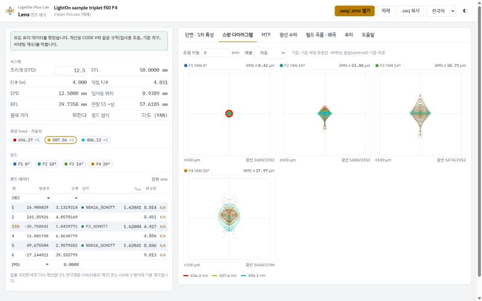

렌즈 설계 파일을 해석 도구로 열면 스팟 다이어그램과 MTF가 가장 먼저 눈에 들어옵니다. 그런데 둘 다 숫자 하나로는 좋고 나쁨을 말해 주지 않습니다. RMS 스팟 6 µm가 좋은 값인지는 F수와 픽셀 크기를 알아야 판단할 수 있고, MTF 0.4도 어느 주파수에서 읽었는지에 따라 충분하기도 하고 모자라기도 합니다.
저는 CODE V·Zemax 파일을 브라우저에서 여는 도구를 만들면서 그래프마다 정의를 하나씩 정해야 했습니다. 그때 공식보다 자주 따진 것은 "이 그래프를 무엇과 겹쳐 봐야 하는가"였습니다. 스팟은 에어리 원과 픽셀 크기와, MTF는 회절 한계 곡선과 센서의 나이퀴스트 주파수와 견줘야 뜻이 생깁니다. 이 두 그래프를 중심으로 읽는 순서와 자주 틀리는 지점을 적습니다.
먼저 맞춰 둘 조건
- 파장 — 단색(흔히 d선 587.6 nm)인지, 여러 파장을 가중 평균한 다색인지. 다색에는 색수차가 섞이므로 단색보다 나쁘게 나오는 것이 정상입니다.
- 초점 위치 — 근축 상면인지, 성능이 가장 좋은 위치로 옮긴 상면인지. 스팟과 MTF는 상면을 조금만 옮겨도 달라집니다.
- 작동 F수 — 회절 계산에는 상공간 개구수로 정한 F수(N = 1/(2NA))가 들어갑니다. 무한 물체에서는 사양서의 F/#와 거의 같지만, 가까운 물체를 찍을 때는 커집니다.
스팟 다이어그램 읽기
스팟 다이어그램은 한 필드 점에서 출발한 광선을 입사동 전체에 고르게 뿌려 추적하고, 상면에 닿은 자리를 점으로 찍은 그림입니다. 회절이 빠진 기하광학 결과라서 "빛이 어디로 가는가"는 정확히 보여 주지만, "상이 어떻게 보이는가"는 조건부로만 알려 줍니다.
기준점과 두 가지 반경
점은 보통 기준 파장의 주광선이 닿은 자리를 원점으로 찍히고, RMS는 광선들의 무게중심을 기준으로 내는 경우가 많습니다. 주광선 기준 RMS의 제곱은 무게중심 기준 RMS의 제곱에 둘 사이 거리의 제곱을 더한 값이라 항상 같거나 큽니다. 코마가 큰 필드일수록 차이가 벌어집니다. 어느 쪽이든 원점이 실제로 빛이 도착한 자리이므로, 상이 이상적인 위치에서 벗어나는 왜곡은 스팟에 나타나지 않습니다.
RMS 반경은 광선과 기준점 사이 거리를 제곱해 평균한 뒤 제곱근을 취한 값으로, 에너지가 대체로 얼마나 퍼졌는지를 대표합니다. GEO 반경은 가장 먼 광선까지의 거리입니다. 광선 하나가 정하는 값이라 성긴 꼬리에 크게 흔들리고, 추적 광선 수를 늘리면 더 먼 광선이 잡혀 커지기도 합니다. 순수한 초점 어긋남처럼 원판이 고르게 채워진 스팟은 GEO가 RMS의 약 1.4배(√2)입니다. 이 비율이 훨씬 크면 작은 중심에 에너지가 몰리고 소수의 광선이 멀리 흩어진 상태이고, 흩어진 빛은 상 주변에 얇게 깔려 대비를 떨어뜨립니다.
어느 반경을 기준으로 삼을지는 용도가 정합니다. 제가 다뤄 본 거리 측정용 수신 렌즈는 사양이 RMS가 아니라 모든 광선이 들어가는 100 % 스팟 지름으로 적혀 있었습니다. 검출기 밖으로 나간 빛은 신호가 되지 않기 때문입니다. 다만 이 100 %는 기하광학의 값입니다. 회절이 들어간 실제 점상은 바깥 고리가 계속 이어져 에너지 비율이 100 %에 아주 천천히 다가가므로, 스팟이 에어리 원보다 충분히 클 때만 실제 빛 분포와 비슷한 뜻을 가집니다.
반경인지 직경인지도 확인합니다. 도구를 바꿔 비교할 때 가장 흔한 2배 실수입니다. 제가 만든 Lens는 무게중심 기준 RMS 직경을 숫자로 적고, 칸 안의 점선 원은 무게중심에 그린 RMS 반경 원입니다.
에어리 원과 겹쳐 보기
수차가 전혀 없어도 원형 조리개의 점상은 회절 때문에 에어리 패턴으로 퍼지고, 첫 어두운 고리의 반경은 다음과 같습니다.
에어리 반경 r = 1.22 × λ × N (λ: 파장, N: 작동 F수)- 스팟이 에어리 원보다 훨씬 크다 — 기하수차가 상을 지배합니다. 스팟 그림이 실제 번짐을 꽤 잘 대표하고, 스팟을 줄이면 그대로 화질이 좋아집니다.
- 스팟이 에어리 원과 비슷하거나 그 안에 들어온다 — 회절이 지배합니다. 스팟을 더 줄여도 상은 거의 변하지 않으므로, 이때는 파면 오차, Strehl 비, MTF로 판단합니다.
그래서 "스팟이 작을수록 좋다"는 에어리 원 바깥에서만 맞는 말입니다. 에어리 원 안에서 RMS 1 µm와 0.5 µm의 차이는 두 설계의 우열을 가리는 근거가 되기 어렵습니다. GEO 스팟 전체가 에어리 원 안에 들어오면 회절 한계에 가깝다고 보는 눈대중이 있지만, 최종 판정은 파면 오차로 합니다. Lens는 스팟 칸의 자동 축척을 적어도 에어리 반경이 들어가게 잡으므로, 모든 필드의 점 무리가 칸 가운데 작게 뭉쳐 있다면 회절이 지배하는 설계라는 뜻입니다.
필드별·파장별 모양으로 수차 알아보기
스팟 한 칸의 모양보다, 필드를 따라 모양과 크기가 어떻게 변하는지가 더 많은 것을 알려 줍니다. 3차 수차 이론에서 각 수차는 상높이 h에 따라 커지는 방식이 다릅니다.
| 수차 | 축상 필드 | 필드에 따른 크기 | 스팟 모양 |
|---|---|---|---|
| 구면수차 | 있음 | 필드와 거의 무관 | 원형 대칭, 밝은 중심에 성긴 테두리 |
| 코마 | 없음 | h에 비례 | 반경 방향으로 꼬리를 끄는 혜성 |
| 비점수차 | 없음 | h²에 비례 | 타원이나 짧은 선, 초점을 옮기면 긴 방향이 90° 돌아감 |
| 상면 만곡 | 없음 | h²에 비례 | 둥근 채로 커지고, 그 필드만 초점을 옮기면 작아짐 |
| 축상 색수차 | 있음 | 필드와 거의 무관 | 색마다 크기만 다른 동심원 |
| 배율 색수차 | 없음 | h에 비례 | 색마다 중심이 반경 방향으로 어긋남 |
읽는 순서는 이렇습니다. 축상 스팟이 이미 크면 구면수차나 축상 색수차부터 의심하고, 파장별 점 색으로 둘을 가릅니다. 축상은 작은데 가장자리로 갈수록 커진다면 축외 수차입니다. 비대칭이면 코마, 길쭉하면 비점수차, 둥근 채로 커지면 상면 만곡 쪽입니다. 상높이별 RMS 곡선이 직선처럼 오르는지(h에 비례) 포물선처럼 휘어 오르는지(h²에 비례)도 단서가 됩니다. 실제 렌즈는 여러 수차와 고차 항이 섞이므로 이 표는 출발점이고, 광선 수차 곡선과 필드 곡률 그래프로 확인합니다.
가장자리 필드의 점 무리 한쪽이 칼로 자른 듯 평평하다면 렌즈나 경통 테두리가 광속을 자른 것(비네팅)입니다. 수차가 큰 바깥쪽 광선이 잘려 나가 스팟이 실제 설계 실력보다 작아 보일 수 있습니다. Lens에서는 칸 아래의 통과 광선 수와 상대 조도를 같이 봅니다.
MTF를 센서와 맞춰 읽기
MTF는 사인파 무늬를 찍었을 때 상에 남는 명암 대비의 비율을 공간 주파수(lp/mm, 1 mm 안의 밝고 어두운 줄 쌍 수)별로 그린 곡선입니다. 먼저 회절을 넣어 계산한 회절 MTF인지, 광선만으로 근사한 기하 MTF인지 확인합니다. 기하 MTF는 회절을 무시하므로 수차가 작은 렌즈에서는 실제보다 높게 나옵니다.
기준선 1 — 회절 한계 곡선과의 간격
회절 차단 주파수 f_c = 1 / (λ × N)수차는 MTF를 깎을 뿐 올리지 못하므로, 설계 곡선은 같은 동공의 회절 한계 곡선 아래에 놓입니다. 볼 것은 높이 자체보다 그 곡선과의 간격입니다. 다색 MTF에서는 가장 짧은 파장이 차단 주파수를 정하며, Lens가 MTF 그래프와 함께 표시하는 차단 주파수도 그 기준입니다.
회절 한계에 붙어 있다고 좋은 렌즈인 것은 아닙니다. 회절 한계 자체가 F수에 묶여 있어서, d선에서 F/8 렌즈는 수차가 없어도 약 213 lp/mm보다 촘촘한 무늬를 전달하지 못합니다. 간격은 "이 F수에서 얼마나 잘 만들었나"를 말할 뿐이고, "이 센서에 충분한가"는 다음 기준선이 답합니다.
기준선 2 — 픽셀 피치에서 나온 나이퀴스트 주파수
나이퀴스트 주파수 f_N = 1 / (2p) (p: 픽셀 피치)세 식을 한 조합에 대입해 보면 관계가 보입니다.
예시: λ = 0.5876 µm (d선), N = 2.8, p = 1.4 µm
에어리 반경 1.22 × 0.5876 µm × 2.8 ≈ 2.0 µm (지름 약 4.0 µm, 픽셀 세 개 가까이)
회절 차단 주파수 1 / (0.0005876 mm × 2.8) ≈ 608 lp/mm
나이퀴스트 1 / (2 × 0.0014 mm) ≈ 357 lp/mm
회절 한계 MTF f_N(357 lp/mm)에서 약 0.30, f_N/2(179 lp/mm)에서 약 0.63이 조합에서는 렌즈 차단 주파수가 나이퀴스트보다 높습니다. 357~608 lp/mm의 무늬는 렌즈를 통과하지만 센서가 표현하지 못하고, 낮은 주파수로 접혀 들어가 모아레가 됩니다(에일리어싱). 나이퀴스트 근처 MTF가 높다는 것이 언제나 장점만은 아닌 이유입니다. 반대로 픽셀이 0.8 µm면 나이퀴스트가 625 lp/mm로 d선 차단 주파수를 넘어, 수차를 다 없애도 센서의 가장 촘촘한 영역을 채우지 못합니다. 픽셀을 줄일 때 F수를 같이 따져야 하는 이유입니다. 베이어 컬러 센서는 빨강·파랑 화소가 한 칸 건너 하나씩이라 그 채널의 샘플 간격이 2p이고, 색 모아레는 흑백 기준 나이퀴스트보다 낮은 주파수에서도 생깁니다.
어느 주파수에서 몇 %를 볼까
읽을 주파수는 렌즈가 아니라 센서에서 정합니다. 흔히 나이퀴스트와 그 절반을 고르고, 그 주파수에서 중심·0.7 필드·모서리처럼 몇 개 상높이의 T와 S 값을 같은 초점에서 읽습니다. 이 용도에는 주파수별 곡선보다 상높이별 MTF가 맞습니다.
몇 %면 좋은가에는 정답이 없고, 기준은 같은 주파수의 회절 한계 값입니다. 위 예시에서 f_N/2 값이 0.45라면 회절 한계 0.63의 약 70 %이니 수차로 꽤 잃은 것입니다. 같은 0.45라도 회절 한계가 0.5인 조합에서는 거의 다 끌어낸 값이 됩니다. 요구값이 회절 한계를 넘으면 수차를 0으로 만들어도 맞출 수 없는데, 이 예시에서 "나이퀴스트에서 0.5 이상"이 그런 요구입니다.
"MTF 50%"라는 말도 풀어서 확인합니다. 어떤 주파수에서 값이 0.5라는 뜻(그 무늬의 명암 차가 절반 남는다)인지, MTF가 0.5로 떨어지는 주파수(MTF50, 단위 lp/mm)인지에 따라 전혀 다른 숫자입니다. 어느 쪽도 선명도가 50 %라는 뜻은 아닙니다. 카메라 리뷰의 MTF50은 대개 찍은 영상에서 잰 값이라 센서와 샤프닝이 들어 있어, 렌즈만 계산한 설계 MTF와 바로 비교할 수 없습니다.
스팟 크기를 픽셀 수로 바꿔 읽기
스팟과 MTF는 따로 보는 그래프 같지만, 기하수차가 지배하는 영역에서는 스팟 크기로 MTF를 어림할 수 있습니다. 스팟을 가우시안 모양으로 근사하면 MTF는 RMS 지름 D와 주파수 f의 곱으로만 정해지고, 픽셀 피치로 나타내면 다음과 같습니다.
가우시안 근사 예시 (기하수차 지배, 렌즈만, 회절·픽셀 개구 제외)
RMS 지름 D = 1p → f_N에서 약 0.54
RMS 지름 D = 1.5p → f_N에서 약 0.25
RMS 지름 D = 2p → f_N에서 약 0.08, f_N/2에서 약 0.54RMS 지름이 픽셀 두 개쯤이면 나이퀴스트에서는 대비가 거의 남지 않고, 그 절반 주파수가 실질적인 한계가 된다는 뜻입니다. 반대로 스팟이 픽셀보다 훨씬 작으면 렌즈가 센서보다 촘촘한 무늬를 넘기므로 에일리어싱을 걱정할 쪽입니다.
실제 스팟은 꼬리나 비대칭이 있어 이 어림과 어긋나는데, 어긋나는 방향이 정보가 됩니다. MTF가 어림보다 높다면 작은 중심에 에너지가 몰려 있고 멀리 흩어진 소수 광선이 RMS를 부풀린 경우입니다. MTF가 어림보다 낮다면 스팟이 회절을 무시할 수 없는 크기이거나, 초점 어긋남처럼 에너지가 가장자리까지 고르게 퍼진 모양일 수 있습니다. 회절이 원인이라면 같은 주파수의 회절 한계 MTF를 곱한 정도까지 내려간다고 어림합니다.
T와 S, 그리고 곡선 모양
접선(T) MTF는 명암이 광축에서 필드 점을 향하는 방향(필드가 Y축 위면 Y 방향)으로 바뀌는 무늬, 곧 줄이 광축 중심의 원에 접하게 놓인 무늬의 값입니다. 시상(S) MTF는 줄이 광축을 향해 방사형으로 놓인 무늬의 값입니다. 축상에서는 둘이 겹치고, 축외에서 벌어지면 비점수차와 상면 만곡이 흔한 원인입니다. 스팟이 한 방향으로 길쭉해지는 필드와 T·S가 갈라지는 필드가 같은지 맞춰 보면 확인됩니다. 한 방향 세부만 뭉개지는 현상은 평균에 드러나지 않으므로 두 값을 평균하지 않습니다.
- 저주파부터 한 단 내려앉은 곡선 — 빛의 일부가 넓게 흩어진 상태입니다. 스팟의 GEO/RMS 비율이 큰 경우와 짝을 이룹니다.
- 0까지 떨어졌다 다시 오르는 곡선 — 다시 오른 구간은 흑백이 뒤집혀 맺히는 가짜 해상입니다. 그래프가 크기만 그리기 때문에 생기는 모양이라 해상력으로 세지 않습니다. 초점이 크게 어긋났을 때 흔합니다.
- 중심만 좋고 가장자리가 나쁜 결과 — 정해 둔 상면 하나에서의 값입니다. 수차 탓인지 상면을 중심에 맞춘 탓인지는 스루포커스 MTF로 가립니다.
PSF·에너지·상대 조도는 이어서 확인한다
스팟이 에어리 원 근처까지 작아지면 상의 모양은 회절을 넣은 PSF로 봐야 하고, 필드끼리의 비교는 Strehl 비로 합니다. 검출기처럼 받는 쪽 크기가 정해진 용도라면 둘러싸인 에너지(encircled energy)가 MTF보다 직접적인 기준이 되며, 정사각형 픽셀 하나에 드는 빛을 엄밀히 보려면 정사각형 안의 에너지(ensquared energy)를 봅니다. 정의와 수치 예는 MTF·PSF·Strehl 비·에너지 집중도 가이드에 정리해 두었습니다.
상대 조도는 가장자리 스팟과 MTF를 믿어도 되는지 확인하려고 같이 엽니다. 가장자리 성능이 의외로 좋은데 같은 상높이에서 상대 조도가 급히 꺾인다면, 비네팅으로 얻은 성능일 수 있습니다. 곡선 읽는 법은 상대 조도 가이드에 있습니다.
읽는 순서 정리
- 파장, 작동 F수, 초점 위치, 반경·직경과 기준점을 먼저 맞춘다.
- 스팟을 에어리 원과 비교해 기하수차가 지배하는지 회절이 지배하는지 정한다.
- 필드를 따라 스팟 모양과 크기가 변하는 방식으로 수차 종류를 좁힌다.
- 픽셀 피치에서 나이퀴스트를 구하고, 그 주파수와 절반에서 상높이별 T·S MTF를 읽는다.
- 목표값은 같은 주파수의 회절 한계 값과 견줘 정한다.
- 스팟 크기를 픽셀 수로 바꿔 MTF와 앞뒤가 맞는지 본다.
- 가장자리 성능은 상대 조도와 통과 광선 수로 비네팅의 대가인지 확인한다.
스팟과 MTF는 같은 빛을 다른 축에서 본 그래프입니다. 한 그래프에서 본 이상은 다른 그래프에서도 같은 모양으로 나타나야 원인으로 믿을 수 있습니다. 헤일로라면 GEO/RMS 비율과 저주파 MTF가 함께 움직이고, 비점수차라면 길쭉한 스팟과 T·S 간격이 함께 움직입니다. 두 그래프가 서로 맞지 않으면 렌즈보다 먼저 계산 조건이 같은지를 확인합니다.